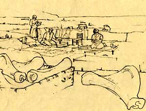

|

The trade in 'dragon bones' for the farmers in Anyang was now over. However, there was a great deal of interest in collecting the oracle bones. The farmers who once worried that the writing on the bones would make them difficult to sell then learned that the bones were much more valuable with writing on! |